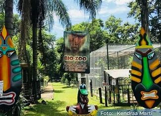

Explora la historia de nuestra ciudad
Aquí encontrarás información detallada sobre los lugares más emblemáticos de Córdoba, sus orígenes, importancia cultural y lo que puedes esperar al visitarlos.
Entradas del Blog
| Imagen | Lugar | Descripción | Detalles | Enlace |
|---|---|---|---|---|
|  | África Bio-Zoo | Un zoológico dedicado a la conservación de especies en peligro y la educación ambiental. | Horario: 9:00 AM - 5:00 PM Entrada: $50 MXN Ubicación: Carretera Córdoba-Veracruz |
|
 |
Parque 21 de Mayo | El corazón de Córdoba, rodeado de historia y cultura, ideal para paseos y eventos. | Horario: Abierto 24 horas Entrada: Gratuita Ubicación: Centro Histórico de Córdoba |
|
 |
Ex Hacienda Toxpan | Un sitio colonial con historia ligada a la producción azucarera, con exposiciones culturales. | Horario: 10:00 AM - 6:00 PM Entrada: $30 MXN Ubicación: Avenida 11, Córdoba, Veracruz |